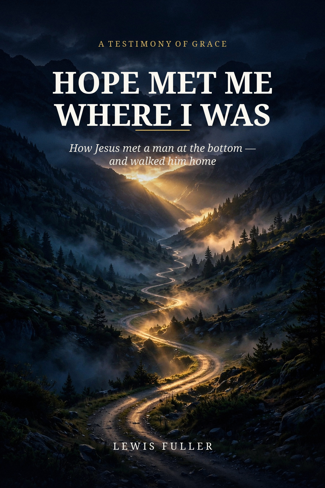

ANNOUNCEMENT
Hope Met Me Where I Was — the testimony of Lewis Fuller

I have an announcement I've waited a long time to make: my book is in the works — Hope Met Me Where I Was.
And here is the order of things, because it matters to me: I've been wanting to write this book since before there was ever an idea for a podcast. The book wasn't an idea that came out of the ministry — the ministry came out of the book. I was carrying this story, and the burden to tell it, long before there was a microphone, a logo, or a single subscriber.
What it's about. It's my whole story, told plain. A boy in his grandmother's pew at the Church of the Living God in Reidsville, North Carolina. A drift that started at eighteen. More than thirty years of addiction — rehabs, AA, NA, jails, homelessness, and every promise I made myself and broke. And then one night at the Haven of Rest in South Carolina, when the light came on over John 17 and God met me where I was. The book follows the whole path: the long way down, the night everything changed, learning to walk in the morning, the wife God gave me, and the ministry that grew out of it — including my wife Rachel's testimony in her own words, the plan of salvation step by step, and the golden chain of Romans 8.
Why I wrote it. In my own words:
"I want people to really know me and see the path that God has walked with me through, the ups and downs, the disappointments. And the good times."
Its purpose. If God could reach a man like me — after thirty years, after all of it — then there is hope for anybody. This book was written for the person who is still where I was: in a cell, a rehab bed, a car that doesn't run, a kitchen at 2 AM. Nobody is too far gone.
How it will be given. The same way everything in this ministry is given. When the book is ready, the digital edition will be a free download — given, never sold. A printed edition will follow at cost: priced only to cover printing and putting the book together, not a penny of profit. The message is never for sale; only the paper gets paid for.
The official reveal. Mark the date: December 16, 2026 — our first wedding anniversary. That date was chosen on purpose, because this book holds both our stories: mine, and Rachel's, in her own words. My wife was the connecting piece to the puzzle of our story together, because our marriage results in a combined new story — so the book gets revealed on the day our stories became one.
It's not out yet — I'm reading it through myself first. If you'd like to know the moment it lands, email us at thehopeconnectionministry2026@gmail.com, or keep watching this blog and the podcast. And if you know somebody who needs this book, send them this post — hope travels best hand to hand.
🎙 Podcast: tinyurl.com/TheHopeConnectionSpotify
▶️ YouTube: tinyurl.com/TheHopeConnectionYouTube
📘 Blog: tinyurl.com/TheHopeConnectionBlog
✉️ Email: thehopeconnectionministry2026@gmail.com
The Hope Connection — meeting others where they are in the Name of Jesus.